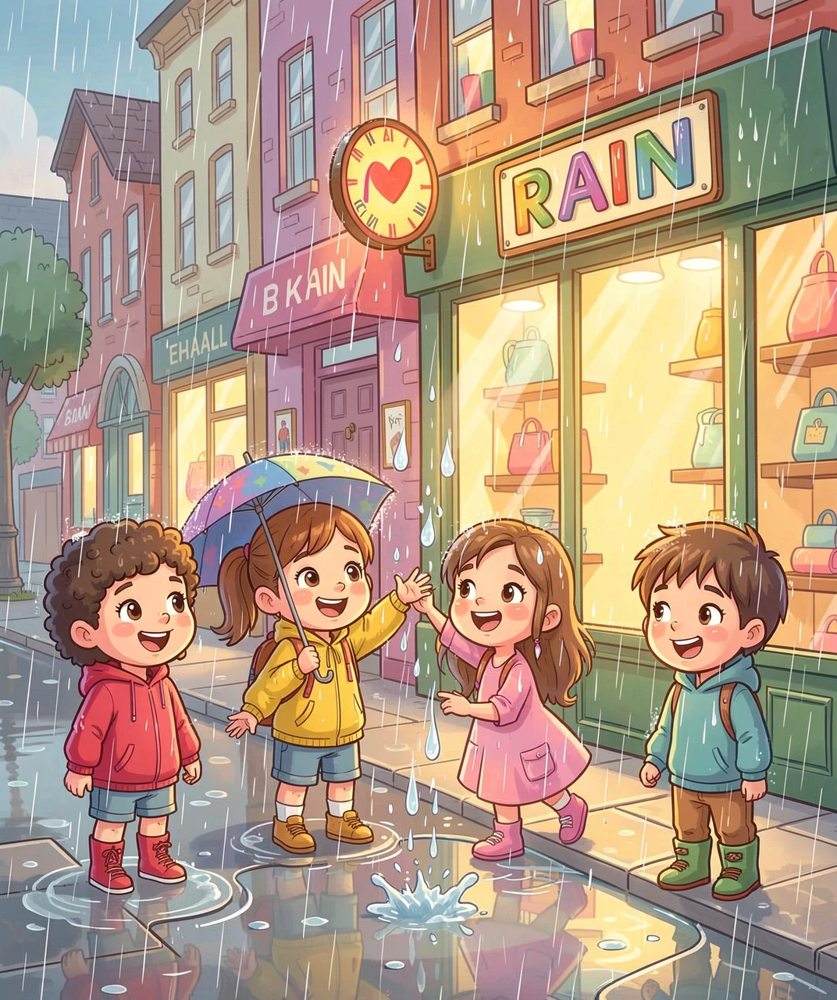
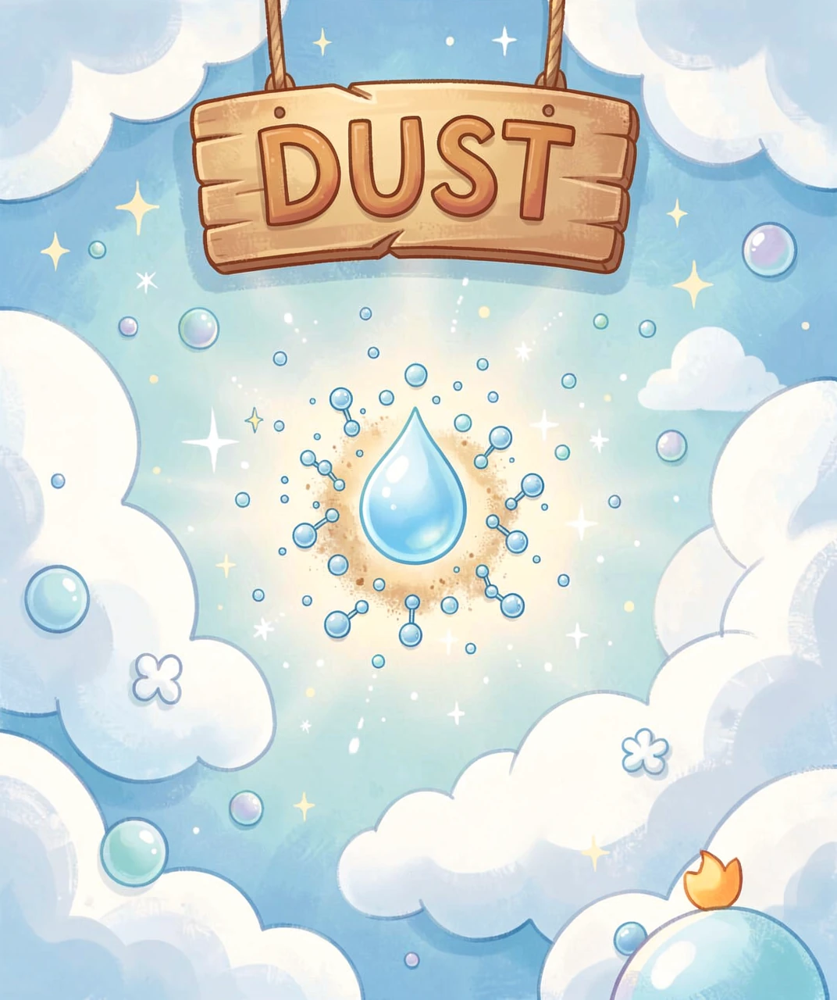
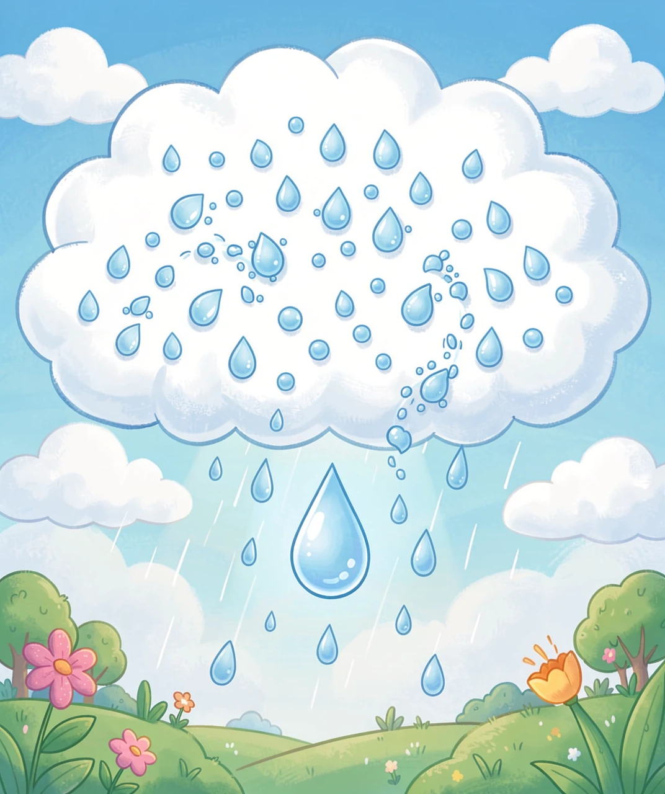
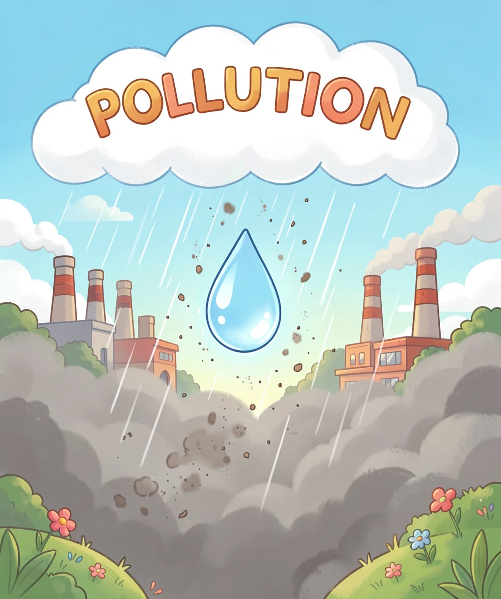
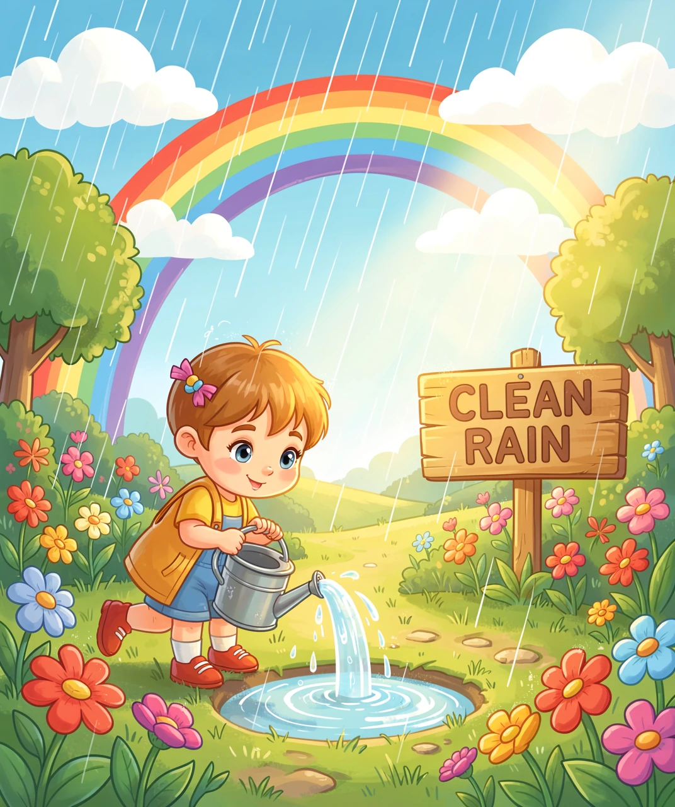

下雨天，你会不会做这件事——仰起头，张开嘴，接一滴雨水尝尝？
雨水看起来那么清亮，从那么高的天上落下来，应该是干干净净的吧？
可是你有没有注意到：下过雨的车身上，总是留下一层灰扑扑的泥点；北方春天的雨，甚至能直接给白车穿上一件"泥外套"。
先记住这个问题：雨的"脏"，到底是在天上就脏了，还是在落下来的路上脏的？
想通这一点，你就能看懂整篇文章。

接住一滴雨，其实接住了一趟很长的旅行
☔ ☔ ☔
第一章：云是白的，雨为什么可能是脏的？
云是白色的，看起来又轻又软，像棉花糖。按道理说，从棉花糖里掉出来的东西，应该很干净才对。
但这里藏着一个误会：云并不是"一团水"，而是一大群浮在空中的小水珠和小冰晶。而这些小水珠，从出生的那一刻起，就不是纯的。
想弄明白为什么，我们得先干一件事——把水蒸气变成一滴水，看看它到底需要什么。
第二章：雨滴出生，必须借一粒"种子"
先想一个很奇怪的事实：空气中的水蒸气，可以一直飘着，飘到超过它该承受的量，也不肯变成水滴。
为什么？我们来一层一层往下追。
第一层：水分子是小小的粒子，它们在水面上跳来跳去，有些跳得太用力，就飞到空气里去了（这就是蒸发）。
第二层：如果水滴特别小，它的表面是弯的（几乎像个球）。在弯弯的表面上，水分子更容易"逃走"——因为它们周围的同伴更少，拉不住它们。
第三层：所以一个刚凭空冒出的小水滴，几乎立刻就会被蒸发掉。想让它活下来、长大，它得先跨过一道很高的门槛。而如果有一粒现成的"台阶"给它踩，这道门槛就几乎消失了。
这粒"台阶"，科学家叫它凝结核——就是空气里飘着的一粒微小的东西：尘埃、海盐颗粒、花粉、烟灰，甚至细菌。
水分子们趴在这粒东西上面，手拉着手排好队，就不那么容易被扯走了。于是，一滴水就这样"借"着别人的身体出生了。
所以第一个结论来了：一滴雨的心里，几乎总有一粒不是水的东西。
🌊 趣味知识：海上的云，是用"盐"做的种子
海洋上空的云，很多是拿海盐当凝结核长出来的。海浪把水花甩到空中，水蒸发了，盐留了下来，变成极小的盐粒飘在空中。水蒸气趴在这些盐粒上，才有了云。所以海上那些白云，种子居然是咸的！

水分子会排队趴在一粒尘埃上——这就是雨滴的起点
💧 💧 💧
第三章：从"云滴"长成"雨滴"，得长大几十万倍
云里的小水珠叫云滴，直径大约 0.01 毫米——小到能一直飘着不掉下来。
而一滴真正的雨滴，直径大约 1 到 2 毫米。算一下体积，雨滴是云滴的几十万到上百万倍。
云滴要怎么长大这么多？靠继续凝结行不行？不行。
为什么不行：云滴一旦开始长大，它周围那一小圈水汽立刻就被用光了。它想再长，就得等新的水汽飘过来——这个速度太慢了。而且云滴越大，下落时遇到的空气阻力相对越小，它会开始往下掉，一掉出云层就蒸发掉了。
所以云滴必须换一种长法：合并。
暖云里：滚雪球式的碰撞合并
云里成千上万的云滴，大小其实并不一样。大一点的下落得快，小一点的下落得慢。快的那一颗往下冲的时候，会一路"扫"过并吞掉比它慢的小水珠——就像滚雪球一样，越滚越大、越滚越快，最后大到空气托不住，就落下来了。
冷云里：冰晶抢水汽的"贝吉龙过程"
高空的云里有很多冰晶。这里有个奇妙的物理事实：在同样的温度下，冰比水更容易"抓住"水汽。也就是说，同样的空气里，水汽更愿意跑到冰晶上去。
于是出现了这样一幕：冰晶不断从旁边的小水滴那里"抢"走水汽，自己越长越大；小水滴则越来越小，最后消失。冰晶重了、掉下来了，穿过下面温暖的空气时融化——变成一滴雨，落到你脸上。
❄️ 趣味知识：一朵云的重量，能抵好几头大象
一朵普通的积云里含的水，加起来能有几百吨——比好几十头大象还重。它之所以不砸下来，是因为这些水被拆成了无数极小的云滴，每一颗都被空气轻轻托着。等它们"合并"到托不住，才变成雨掉下来。

云滴靠"合并"长大——一滴雨往往是成千上万颗小水珠合起来的
🌫️ 🌫️ 🌫️
第四章：变脏的关键，在落下来这一段路
现在回答开头那个问题。
雨滴在云里的时候，身上只带了一点"种子"和一路上合并进来的东西，其实还不算太脏。真正让雨变脏的，是它从云底落到地面的这一段路。
云底通常离地面有 1 到 2 公里。这 1 到 2 公里的空气里飘着什么？灰尘、汽车尾气、工厂排出的烟、花粉、细菌、微小的塑料颗粒……雨滴往下落的时候，像一个不停挥动的扫把，把这些东西统统裹进自己身上。这个过程有个名字，叫冲刷。
于是就有了一个特别有用的规律：刚下雨的那几分钟，雨水最脏。
因为空气已经攒了好几天的灰尘没洗，头几分钟的雨是一次性把所有积蓄洗下来的。等雨下透了、空气被洗干净了，后面的雨才越来越接近"干净的雨"。
这叫做初雨效应。
所以你大概能理解这两件事了：
- 洗车师傅总说"等雨下透再洗"——不是偷懒，是因为第一场雨反而会把车弄得更脏。
- 想接雨水浇花，别接开头那几分钟的，等雨下了一阵再接。
酸雨：追到最底层的原因
先纠正一个误解：最天然的雨水，本来就不是中性的。空气里有二氧化碳，它溶进雨滴，会生成一点点碳酸，让雨水的 pH 大约落在 5.6 附近。所以"酸雨"不是指"有点酸"，而是特指 pH 低于 5.6 的雨。
那更酸的部分从哪来？追到根子上，是燃烧：
- 煤和石油里含有硫。燃烧时硫和氧气结合，生成二氧化硫（SO₂）。
- 更微妙的是——空气里最多的氮气，在发动机和锅炉那种高温下，会被"硬拉"着和氧气结合，生成氮氧化物（NOₓ）。
- 这些气体飘到云里，溶进雨滴，变成硫酸和硝酸。
所以酸雨的源头不是雨，是烟囱和排气管。雨只是把这些气体从天上带回了地面。
云里还有活的东西
更让人意外的是：雨滴里不只有灰尘，还有活着的细菌和真菌孢子。它们被风卷到高空，搭着水滴在空中旅行，有的甚至能在云里存活、繁殖，还会参与水的结冰过程。下一场雨，某种程度上也是一次"空中的微生物搬家"。
🏜️ 趣味知识：泥雨是哪里来的？
北方春天偶尔会下一场"泥雨"：落在车上全是黄褐色的泥点。它的原理特别直白——大风把沙漠里的沙尘卷到几千米高空，这些沙尘正好做了雨滴的凝结核；雨滴裹着沙尘落下来，就成了泥雨。这是"雨不干净"最直观的一次现场演示。

下落这一段，雨滴像个扫把，把空气里的脏东西一起带下来
🧪 🧪 🧪
第五章：那这场雨，到底能不能用？
把前面的线索串起来，答案其实很清楚：雨干不干净，取决于它路过了怎样的天空。
按用途排个队
- 浇花、冲厕所、洗车 —— 可以，环保又省水。但避开开头那几分钟的雨，效果更好。
- 洗手、洗澡 —— 不推荐直接用，尤其在城市里。雨滴经过的空气层里有什么，它就带下来什么。
- 喝 —— 只有紧急情况才考虑，而且必须先过滤、再煮沸。雨水里可能有细菌、颗粒物和溶解的污染物，煮沸能解决微生物，但溶解的东西要靠过滤。
顺便说一个反差：森林里、大海上的雨，和堵车路段上方落下的雨，完全不是一回事。同样的云、同样的雨滴，路过的天空不一样，最后落到地上的东西就不一样。
动手做个小实验
下次下雨，准备两个干净的玻璃杯：
- 第一杯：接下雨头 5 分钟的雨水。
- 第二杯：等到雨下了半小时以后再接一杯。
- 把两杯水都放着自然晾干，然后看杯底。
你会发现第一杯的杯底明显更脏。这就是"初雨效应"在你家窗台上的一次现场重现。
🌍 趣味知识：让雨变干净的钥匙，不在天上
既然雨是在下落的过程中变脏的，那么想让雨变干净，办法就很明确了——不是去管云，而是
让空气变干净。减少烟尘和尾气排放，落到我们手上的雨，就会一天天更接近它在云里时的样子。每一滴雨水，其实都是当天空气的一份"体检报告"。

雨干不干净，是天空替它写的答卷
✨ ✨ ✨
总结一下
- 水蒸气想变成水滴，需要一粒现成的"台阶"——凝结核。所以一滴雨的中心，常常有一粒尘埃或盐粒。
- 云滴长成雨滴，靠的不是继续凝结，而是碰撞合并（暖云）或冰晶抢水汽（冷云）。
- 雨在天上不算太脏，变脏主要发生在从云底落到地面这 1~2 公里的路上。
- 刚下雨那几分钟的雨水最脏（初雨效应）；天然雨水的 pH 大约 5.6，低于它才叫酸雨。
- 想让雨干净，得让空气干净。
🎯 互动小测验
1. 雨滴最早是怎么"出生"的？
A. 水蒸气自己挤成一小滴水
B. 水分子趴在一粒尘埃或盐粒上聚集起来
C. 云朵被太阳晒化了
答案：B（水蒸气需要凝结核当"台阶"）
2. 为什么水蒸气不会自己变成小雨滴？
A. 小水滴表面是弯的，水分子很容易逃走
B. 水蒸气太轻了
C. 因为空气不让它变
答案：A（弯曲表面的小水滴不稳定，几乎马上会蒸发）
3. 一场雨里，什么时候的雨水最脏？
A. 一开始下的那几分钟
B. 中间下得最大的时候
C. 快要停的时候
答案：A（初雨效应：空气攒的灰尘被一次洗下来）
4. 天然雨水本来就不是中性的，它的 pH 大约是多少？
A. 7.0（正好中性）
B. 约 5.6（因为溶了二氧化碳）
C. 约 2.0（特别酸）
答案：B（pH 低于 5.6 才叫酸雨）
5. 想让雨变干净，最根本的办法是什么？
A. 让云变高一点
B. 下雨的时候不打伞
C. 减少烟尘和尾气，让空气变干净
答案：C（雨是在下落时变脏的，所以源头在空气）
—— 完 ——
谢谢阅读！希望你学到了很多知识！
本故事由 AI 助手小龙为小朋友精心制作 🐉